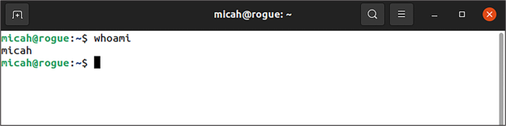
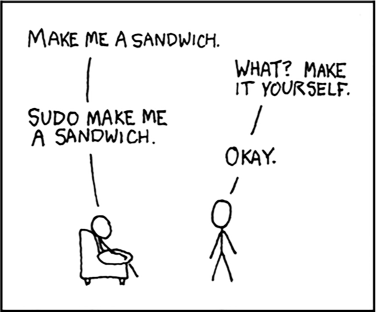
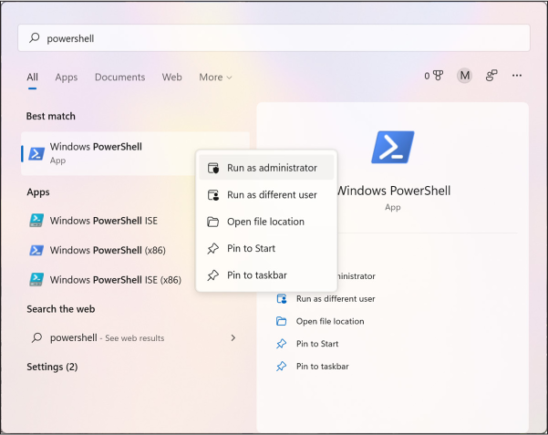
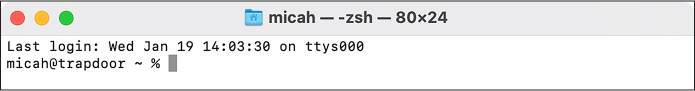
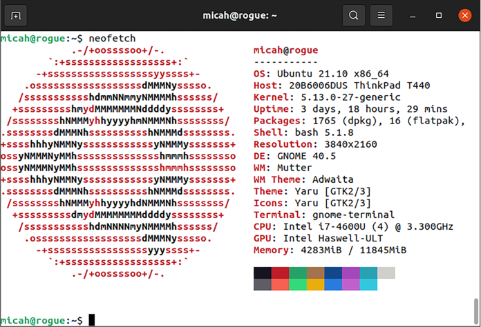
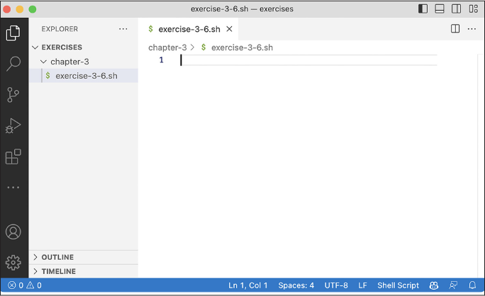

Command line interfaces are text-based, rather than graphical, interfaces to interact with your computer. Instead of clicking on icons, you enter commands to run programs in a terminal emulator (normally referred to just as a terminal). After running a command, you’ll typically see text-based output displayed in the terminal.
In this chapter, you’ll learn the basic command line skills you need to follow along with the rest of this book. Whether you’re using Windows, macOS, or Linux, you’ll learn how to install and uninstall software via the command line, how filepaths work, how to navigate around the folders on your computer, and how to use text editors. You’ll also write your first shell script, a file containing a series of commands.
Introducing the Command Line
To prepare you to start working on the command line, this section explains some fundamentals: what shells are, how users and paths work in different operating systems, and the concept of privilege escalation.
The Shell
The shell is the program that lets you run text-based commands, while the terminal is the graphical program that runs your shell. When you open a terminal and see a blinking text cursor waiting for commands, you’re using a shell. When hackers try to break into a computer, their initial goal is to “pop a shell,” or access the text-based interface that allows them to run whatever commands they want.
All operating systems, even mobile ones like Android and iOS, have shells. This book focuses on Unix shells, the kind that come with macOS and Linux (but Windows users can also use them). Most versions of Linux use a shell called bash, and macOS uses one called zsh. These shells are very similar, and for the purposes of this book you can think of them as interchangeable.
Windows, on the other hand, comes with two shells: an older one called Command Prompt (or cmd.exe) and a newer one called PowerShell. The syntax—rules that define what different commands mean—used by Windows shells is very different from that used by Unix shells. If you’re a Windows user, you’ll primarily work in a Unix shell for the examples in this book. Setting up your computer to run Linux directly in Windows will be this chapter’s first exercise.
To make your shell do something, such as run a program, you carefully
enter the desired command and then press ENTER (or
RETURN on Mac keyboards). To quit the shell, enter
exit and press
ENTER. Shells are finicky: you need to enter commands using
the correct capitalization, punctuation, and spacing, or they won’t
work. Typos usually result in nothing more serious than error messages,
however, and it’s easy to go back and fix a mistake in a command. I’ll
explain how to do so in the Editing Commands section on page
68.
Users and Paths
Although operating systems like Windows, macOS, and Linux are different in some ways, they all share basic building blocks, including users and paths.
All operating systems have users, separate accounts that different people use to log in to the same computer. Users generally have home folders, also known as home directories, where their files live. Figure 3-1 shows my terminal in Ubuntu, a popular Linux distribution.

Figure 3-1: My Ubuntu terminal
My username is micah and the name of my Ubuntu computer is rogue. Your terminal will look different depending on your operating system, username, and computer name.
All operating systems also have filesystems, the collection of files and folders available on the computer (you got a brief introduction to filesystems in Chapter 1 while encrypting your USB disk). In a filesystem, each file and folder has a path, which you can think of like the location, or address, of that file. For example, if your username is alice, the path of your home folder in different operating systems would look as follows:
- Windows: C:\Users\alice
- macOS: /Users/alice
- Linux: /home/alice
Windows filesystems operate differently from macOS or Linux filesystems
in a few key ways. First, in Windows, disks are labeled with letters.
The main disk, where Windows itself is installed, is the C: drive.
Other disks, like USB disks, are assigned other letters. In Windows,
folders in a path are separated with a backslash (\), while other operating systems use
forward slashes (/). In
Linux, paths are case sensitive, but not in Windows and macOS (by
default). For example, in Linux you can store one file called
Document.pdf and another called document.pdf in the same folder. If
you try to do the same in Windows, saving the second file overwrites the
first.
Let’s look at some example paths. If your username is alice and you download a file called Meeting Notes.docx into the Downloads folder, here’s what that path would look like:
- Windows: C:\Users\alice\Downloads\Meeting Notes.docx
- macOS: /Users/alice/Downloads/Meeting Notes.docx
- Linux: /home/alice/Downloads/Meeting Notes.docx
When you plug in a USB disk, it’s mounted to different paths for different operating systems. If your disk is labeled datasets, the path representing the location of that disk might look as follows:
- Windows: D: (or whatever drive letter Windows decides to mount the disk to)
- macOS: /Volumes/datasets
- Linux: /media/alice/datasets
It’s important to understand how to read paths, since you’ll need to include the location of your dataset or files it contains in the commands you run.
User Privileges
Most users have limited privileges in an operating system. However, the root user in Linux and macOS and the administrator user in Windows have absolute power. While alice may not be able to save files into bob’s home folder, for example, the root user has permissions to save files anywhere on the computer. When a Mac asks you to enter your user password to change system preferences or install software, or when a Windows machine asks if you want to allow a program to make changes to your computer, the operating system is asking for your consent before switching from your unprivileged user account to the root or administrator user account.
Most of the time when you’re working in a terminal, you run commands as
an unprivileged user. To run a command that requires root (or
administrative) privileges in Linux and macOS, such as to install a new
program, just put sudo in
front of it and press ENTER, and you’ll be prompted to enter
the password for your regular user account.
As an example, the whoami
command tells you which user just ran a command. On my computer, if I
enter whoami without
sudo, the output is
micah. However, if I enter
sudo whoami, which requires
me to type my password, the output is root:
micah@rogue:~$ whoami
micah
micah@rogue:~$ sudo whoami
[sudo] password for micah:
root
If you recently ran sudo,
you can run it again for a few minutes without having to re-enter your
password.
WARNING Be very careful when running commands as root, since running the wrong commands as the root user can accidentally delete all of your data or break your operating system. Before using sudo, make sure you have a clear understanding of what you’re about to do.
You can use sudo to gain root access only if your
current user has administrator access. If you’re the only user on your
computer, you’re probably an administrator. To find out, try using
sudo and see whether you get
a “permission denied” error.
Figure 3-2 shows a comic by Randall Munroe
from his XKCD website that succinctly demonstrates the power of
sudo.

Figure 3-2: Demanding a sandwich with sudo
Before learning more command line code, Windows users must install Ubuntu (see Exercise 3-1). Mac or Linux users can skip to the Basic Command Line Usage section on page 62.
Exercise 3-1: Install Ubuntu in Windows
To work with Ubuntu on a Windows machine, you could install both Windows and Linux or use a virtual machine within Windows, as mentioned in Chapter 1. However, for this book’s purposes, it’s simplest to use the Windows Subsystem for Linux (WSL), a Microsoft technology that lets you run Linux programs directly in Windows. Opening an Ubuntu window in WSL will, in turn, open a bash shell and let you install and run Ubuntu software. (Technically, WSL does use a VM, but it’s fast, managed by Windows, and unobtrusive, running entirely behind the scenes.)
To install WSL, open a PowerShell window as an administrator: click Start, search for powershell, right-click Windows PowerShell, choose Run as Administrator, and click Yes. Figure 3-3 shows this process, which may look slightly different depending on your version of Windows.

Figure 3-3: Running PowerShell as an administrator in Windows
In your administrator PowerShell window, enter the following command and press ENTER:
wsl --install -d Ubuntu
This installs the Windows Subsystem for Linux, then downloads and installs Ubuntu Linux on your computer.
Your screen should now look something like this:
PS C :\Windows\system32> wsl --install -d Ubuntu
Installing: Windows Subsystem for Linux
Windows Subsystem for Linux has been installed.
Downloading: WSL Kernel
Installing: WSL Kernel
WSL Kernel has been installed.
Downloading: GUI App Support
Installing: GUI App Support
GUI App Support has been installed.
Downloading: Ubuntu
The requested operation is succession. Changes will not be effective until the
system is rebooted.
PS C:\Windows\system32>
The final line of this output tells you to reboot your computer. Enter
exit and press
ENTER (or just close the window) to quit PowerShell, then
reboot. After you log in to Windows again, you should see an Ubuntu
window informing you that the installation may take a few more minutes
to complete. Then the window should present you
with a prompt asking you to create a new user:
Please create a default UNIX user account. The username does not need to match
your Windows username.
For more information visit: https://aka.ms/wslusers
Enter new UNIX username:
Ubuntu needs to keep track of its own users rather than the existing users on your Windows computer.
With the Ubuntu terminal window in focus, enter a username and press ENTER. The terminal should then prompt you to create a password:
New password:
Either use the same password you use to log in to your Windows account or create a new one and save it in your password manager. Enter your password and press ENTER. While you’re typing, nothing will appear in the Ubuntu terminal.
The terminal should now prompt you to re-enter your new password; do so
and press ENTER, which should drop you into an Ubuntu shell
with a prompt and a blinking cursor. My prompt says
micah@cloak:~$ because my
username is micah and the name of my Windows computer is cloak:
New password:
Retype new password:
passwd: password updated successfully
Installation successful!
--snip--
micah@cloak:~$
You can now open Ubuntu in your Windows computer. From this point on, when instructed to open a terminal or run some command line code, use an Ubuntu terminal window unless I specify otherwise.
From within your Ubuntu shell, you can access your Windows disks in the /mnt folder. For example, you can access the C: drive in /mnt/c and the D: drive in /mnt/d. Suppose I download a document using my web browser and want to access it from Ubuntu. The path to my Downloads folder in Windows is /mnt/c/Users/micah/Downloads, so the document would be in that folder. If I want to access the BlueLeaks data that I downloaded to my USB disk from Ubuntu, then assuming that D: is the USB disk’s drive, the path would be /mnt/d/BlueLeaks.
For more details on using Windows and WSL, including information on common problems related to using USB disks in WSL, as well as disk performance issues and various ways to deal with them, check out Appendix A. Wait until you’ve worked through at least Chapter 4 to start implementing these solutions, since the instructions involve more advanced command line concepts introduced in that chapter.
Basic Command Line Usage
In this section, you’ll learn to use the command line to explore files and folders on your computer. This is a prerequisite to working with datasets, which are just folders full of files and other folders. You’ll learn how to open a terminal, list files in any folder, distinguish between relative and absolute paths, switch to different folders in your shell, and look up documentation on commands from within your terminal.
NOTE When learning command line skills, you can always look things up if you run into problems—I still do this every day. You’re likely not the first person to encounter any given command line issue, so with a few well-worded internet searches, you can find someone else’s solution.
Opening a Terminal
To get started, skip to the subsection for your operating system to learn how to open a terminal. Throughout this chapter, keep a terminal open while you’re reading to test all the commands.
The Windows Terminal
Open the Ubuntu app by clicking Start in the bottom-left corner of the screen, searching for ubuntu, and clicking Ubuntu.
You’ll use Ubuntu most often for this book, but you may need to open the native Windows terminals occasionally as well. You can likewise open PowerShell and Command Prompt by clicking Start and searching for them. Check out the Microsoft program Windows Terminal (https://aka.ms/terminal), which lets you open different terminals in different tabs, choosing between PowerShell, Command Prompt, Ubuntu, and others. If you choose to install it, you can open it the same way.
Pin the Ubuntu app or Windows Terminal app to your taskbar so you can quickly open it in the future: right-click its icon and select Pin to Taskbar.
The macOS Terminal
Open the Terminal app by opening Finder, going to the Applications folder, double-clicking the Utilities folder, and double-clicking Terminal. Figure 3-4 shows my macOS terminal running zsh, the default macOS shell. My username is micah, and the name of my Mac is trapdoor.

Figure 3-4: My macOS terminal
Pin the Terminal app to your dock so you can quickly open it in the future. To do so, after you open Terminal, press CTRL and click the Terminal icon on your dock, then choose Options ▸ Keep in Dock.
The Linux Terminal
In most Linux distributions, open the Terminal app by pressing the Windows key, typing terminal, and pressing ENTER. If you’re running Ubuntu (or any other Linux distribution that uses the GNOME graphical environment), pin the Terminal app to your dock so you can quickly open it in the future. To do so, right-click the Terminal icon and select Add to Favorites.
Clearing Your Screen and Exiting the Shell
As you practice using the terminal in the following sections, you’ll sometimes want to start fresh, without having to see all the previous commands you ran or their output or error messages. Run this simple command to declutter your terminal:
clear
This clears everything off the screen, leaving you with nothing but a
blank command prompt. Make sure to do this only if you no longer need to
see the output of your previous commands. (In the Windows Command Prompt
and PowerShell, use cls
instead of clear.)
When you’re done using the CLI, exit your shell by running this command:
exit
You can also close the terminal window to exit. If you’re running a program when you close the terminal, that program will quit as well.
Exploring Files and Directories
When you open a terminal, your shell starts out in your user’s home
folder, represented as a tilde (~). The folder you’re currently in is
your current working directory, or just working directory. If you
ever forget what directory you’re in, run the pwd command (short for “print working
directory”) to find out.
Running the ls command in
your terminal lists all of the files in your working directory. You can
use this command to check the contents of folders you’re working with.
If there are no files or only hidden files, ls won’t list anything. To check for
hidden files, modify the ls
command using -a (short for
--all):
ls -a
When you add anything to the end of a command, like -a, you’re using a command line
argument. Think of arguments as settings that change how the program
you’re running will act—in this case, by showing hidden files instead
of hiding them.
By default, the ls command
displays files in a format intended to take up as few lines in your
terminal as possible. However, you may want to display one file per line
for easier reading and to get more information about each
file, such as its size, when it was last modified, permissions, and
whether it’s a folder. Using the -l argument (short for
--format=long) formats the
output as a list.
You can use both -a and
-l at the same time like so:
ls -al
Running this command on my Mac gives me the following output:
total 8
drwxr-x---+ 13 micah staff 416 Nov 25 11:34 .
drwxr-xr-x 6 root admin 192 Nov 9 15:51 ..
-rw------- 1 micah staff 3 Nov 6 15:30 .CFUserTextEncoding
-rw------- 1 micah staff 2773 Nov 25 11:33 .zsh_history
drwx------ 5 micah staff 160 Nov 6 15:31 .zsh_sessions
drwx------+ 3 micah staff 96 Nov 6 15:30 Desktop
drwx------+ 3 micah staff 96 Nov 6 15:30 Documents
drwx------+ 3 micah staff 96 Nov 6 15:30 Downloads
drwx------+ 31 micah staff 992 Nov 6 15:31 Library
drwx------ 3 micah staff 96 Nov 6 15:30 Movies
drwx------+ 3 micah staff 96 Nov 6 15:30 Music
drwx------+ 3 micah staff 96 Nov 6 15:30 Pictures
drwxr-xr-x+ 4 micah staff 128 Nov 6 15:30 Public
The first column of this output describes the type of file—whether
it’s a directory (another name for a folder) or an ordinary file—as
well as the file’s permissions. Directories start with d, and ordinary files start with a
hyphen (-). The second
column represents the number of links in the file, which isn’t relevant
for the purposes of this book.
The third and fourth columns represent the user and the group that
owns the file. In addition to users, operating systems have groups of
users that can have their own permissions. For example, in Linux, all
users allowed to use sudo
are in the sudo group. If you create or download a file, its user and
group are normally your username. The fifth column is the file size in
bytes. For example, in the file called .zsh_history, my output is
2,773 bytes.
The next three columns of the output represent the time and date when the file was last modified, and the final column shows the filename.
To see a listing of files in a folder other than the working directory,
add the path to that folder to the end of the ls command. For example, this is how I’d
create a listing of files in my code/hacks-leaks-and-revelations
folder, which contains the files released with this book:
ls -la code/hacks-leaks-and-revelations
I’d get the following output:
total 96
drwxr-xr-x 22 micah staff 704 Jul 27 09:28 .
drwxr-xr-x 12 micah staff 384 Jul 27 09:28 ..
drwxr-xr-x 12 micah staff 384 Jul 27 09:28 .git
drwxr-xr-x 3 micah staff 96 Jul 27 09:28 .github
-rw-r--r-- 1 micah staff 30 Jul 27 09:28 .gitignore
-rw-r--r-- 1 micah staff 35149 Jul 27 09:28 LICENSE
-rw-r--r-- 1 micah staff 6997 Jul 27 09:28 README.md
drwxr-xr-x 6 micah staff 192 Jul 27 09:28 appendix-b
drwxr-xr-x 5 micah staff 160 Jul 27 09:28 chapter-1
drwxr-xr-x 6 micah staff 192 Jul 27 09:28 chapter-10
drwxr-xr-x 11 micah staff 352 Jul 27 09:28 chapter-11
drwxr-xr-x 13 micah staff 416 Jul 27 09:28 chapter-12
drwxr-xr-x 8 micah staff 256 Jul 27 09:28 chapter-13
drwxr-xr-x 3 micah staff 96 Jul 27 09:28 chapter-14
drwxr-xr-x 5 micah staff 160 Jul 27 09:28 chapter-2
drwxr-xr-x 10 micah staff 320 Jul 27 09:28 chapter-3
drwxr-xr-x 13 micah staff 416 Jul 27 09:28 chapter-4
drwxr-xr-x 13 micah staff 416 Jul 27 09:28 chapter-5
drwxr-xr-x 10 micah staff 320 Jul 27 09:28 chapter-6
drwxr-xr-x 12 micah staff 384 Jul 27 09:28 chapter-7
drwxr-xr-x 20 micah staff 640 Jul 27 09:28 chapter-8
drwxr-xr-x 14 micah staff 448 Jul 27 09:28 chapter-9
You’ll download your own copy of these files in Exercise 3-7.
Navigating Relative and Absolute Paths
Programs often require you to provide paths to files or folders, usually
when you run a program that works with specific files on your computer.
The path that I passed into ls in the previous section,
code/hacks-leaks-and-revelations, is a relative path, meaning it’s
relative to the current working directory, my home folder. Relative
paths can change. For example, if I change my working directory from my
home folder (/Users/micah) to just /Users, the relative path to that
folder changes to micah/code/hacks-leaks-and-revelations.
The absolute path to the code/hacks-leaks-and-revelations folder is /Users/micah/code/hacks-leaks-and-revelations, which always provides the location of that folder regardless of my working directory. Absolute paths start with a forward slash (/), which is also known as the root path.
You can use two keywords to access relative paths to specific folders:
. (dot), which represents a
relative path to the current folder, and .. (dot dot), which represents a relative
path to the parent folder (the folder that contains the current
folder).
Changing Directories
The cd command (which stands
for “change directory”) allows you to change to a different folder. To
change your working directory to the folder, run:
cd path
For path,
substitute the path to the folder to which you’d like to move. You can
use either a relative or an absolute path.
Suppose I’m using macOS and have downloaded BlueLeaks to a datasets USB disk plugged into my machine. After opening a terminal, I can run the following command to change my working directory to the BlueLeaks folder, using the absolute path to the folder:
cd /Volumes/datasets/BlueLeaks
Alternatively, I can use a relative path to the folder, running the following command from my home folder:
cd ../../Volumes/datasets/BlueLeaks
Why does the relative path start with ../.. in this example? When I open the
terminal, the working directory is my home folder, which in macOS is
/Users/micah. The relative path .. would be its parent folder, /Users;
the relative path ../..
would be /; the relative path ../../Volumes would be /Volumes; and so on.
As noted earlier, the tilde symbol (~) represents your home folder. No
matter what your working directory is, you can run the following to go
back to your home folder:
cd ~
Use the following syntax to move to a folder inside your home folder:
cd ~/folder_name
For example, the following command would move you to your Documents folder:
cd ~/Documents
If you run ls again after a
cd command, the output
should show you the files in the folder to which you just moved.
Using the help Argument
Most commands let you use the argument -h, or --help, which displays detailed instructions
explaining what the command does and how to use it. For example, try
running the following:
unzip --help
This command should show instructions on all of the different arguments
that are available to you when using the unzip command, which is used to extract
compressed ZIP files.
Here’s the output I got when I ran that command on my Mac:
UnZip 6.00 of 20 April 2009, by Info-ZIP. Maintained by C. Spieler. Send
bug reports using http://www.info-zip.org/zip-bug.html; see README for details.
--snip--
-p extract files to pipe, no messages -l list files (short format)
-f freshen existing files, create none -t test compressed archive data
-u update files, create if necessary -z display archive comment only
-v list verbosely/show version info -T timestamp archive to latest
-x exclude files that follow (in xlist) -d extract files into exdir
--snip--
This output briefly describes what each argument for the unzip command does. For example, if you use
the -l argument, the command
shows a list of all of the files and folders inside the ZIP file without
actually unzipping it.
Accessing Man Pages
Many commands also have manuals, otherwise known as man pages, which give more detail about how to use those commands. Run the following to access a command’s man page:
man command_name
For example, to read the manual for the unzip command, run:
man unzip
The output should display a longer explanation of how to use the
unzip command and its
arguments.
Use the up and down arrows and the page up and page down keys to scroll
through the man pages, or press / and enter a term to search. For
example, to learn more details about how the unzip command’s -l argument works, press / and enter -l, then press ENTER. This
should bring you to the first time -l appears on the man page. Press N to
move on to the next occurrence of your search term.
When you’re finished, press Q to quit the man page.
Tips for Navigating the Terminal
This section introduces ways to make working on the command line more convenient and efficient, along with tips for avoiding and fixing errors. It also shows how to handle problematic filenames, such as those with spaces, quotes, or other special characters. A basic understanding of these concepts will save you a lot of time in the future.
Entering Commands with Tab Completion
Shells have a feature called tab completion that saves time and prevents errors: enter the first few letters of a command or a path, then press TAB. Your shell will fill in the rest if possible.
For example, both macOS and Ubuntu come with a program called hexdump.
In a terminal, enter hexd and
press TAB. This should automatically fill in
the rest of the hexdump command. Tab completion also works for paths.
For example, Unix-like operating systems use the /tmp folder to store
temporary files. Enter ls /tm
and press TAB. Your shell should add the p to finish typing out the full command.
If you enter only the first couple letters of a command or a path, there
may be more than one way for your shell to complete your line of code.
Assuming that you have both Downloads and Documents folders in your
home folder, type ls ~/Do and
press TAB. You’ll hear a quiet beep, meaning that the shell
doesn’t know how to proceed. Press TAB one more time, and it
should display the options, like this:
Documents/ Downloads/
If you enter a c so that
your command so far is ls ~/Doc and press TAB, the command
should complete to ls ~/Documents/. If you enter a w so that your command so far is
ls ~/Dow and press
TAB, it should complete to ls ~/Downloads/.
If you’ve already typed out the path of a folder, you can also press TAB to list files in that folder, or to automatically complete the filename if there’s only one file in the folder. For example, say I have my datasets USB disk, on which I’ve downloaded BlueLeaks, plugged into my Ubuntu computer. If I want to change to my BlueLeaks folder, I can enter the following and press TAB:
cd /Vo
This completes the command as follows:
cd /Volumes/
I press TAB again, and my computer beeps and lists the folders
in /Volumes, which in my case are Macintosh HD and datasets. I
enter d, so my command is
cd /Volumes/d, and press
TAB, and the shell completes the command as follows:
cd /Volumes/datasets/
I press TAB again. My computer beeps again and lists all of
the files and folders in my datasets USB disk. I enter B (the first letter of BlueLeaks) and
press TAB, which gives me:
cd /Volumes/datasets/BlueLeaks/
Finally, I press ENTER to change to that folder.
Editing Commands
You can also edit commands. When you start typing a command, you can press the left and right arrow keys to move the cursor, allowing you to edit the command before running it. You can also press HOME and END—or, if you’re using a Mac keyboard, CONTROL-A and CONTROL-E—to go to the beginning and end of a line, respectively. You can also cycle between commands you’ve already run using the up and down arrows. If you just ran a command and want to run it again, or to modify it and then run it, press the up arrow to return to it. Once you find the command you’re looking for, use the arrow keys to move your cursor to the correct position, edit it, and then press ENTER to run it again.
For example, I frequently get “permission denied” errors when I
accidentally run commands as my unprivileged user when I should have run
them as root. When this happens, I press the up arrow, then
CONTROL-A to go to the beginning of the line, add
sudo, and press
ENTER to successfully run the command.
Dealing with Spaces in Filenames
Sometimes filenames contain multiple words separated by spaces. If you don’t explicitly tell your shell that a space is part of a filename, the shell assumes that the space is there to separate parts of your command. For example, this command lists the files in the Documents folder:
ls -lh ~/Documents
Under the hood, your shell takes this string of characters and splits it
into a list of parts that are separated by spaces: ls, -lh, and ~/Documents. The first part, ls, is the command to run. The rest of
the parts are the command’s arguments. The -lh argument tells the program to display
the output as a list and make the file sizes human-readable. That is, it
will convert the file sizes into units that are easier to read, like
kilobytes, megabytes, and gigabytes, rather than a large number of
bytes. The ~/Documents
argument means you want to list the files in that folder.
Suppose you want to use the same command to list the files in a folder with a space in its name, like \~/My Documents. You’ll run into problems if you enter this command:
ls -lh ~/My Documents
When your shell tries to separate this command into parts, it will come
up with ls, -lh, ~/My, and Documents; that is, it sees \~/My Documents as
two separate arguments, ~/My
and Documents. It will try
to list the files in the folder \~/My (which doesn’t exist), then also
list files in the folder Documents, which isn’t what you intended.
To solve this problem, put the name of the folder in quotes:
ls -lh "~/My Documents"
The shell sees anything within quotes as a single entity. In this case,
ls is the command and its
arguments are -lh followed
by ~/My Documents.
Alternatively, you can use a backslash
(\) to escape the space:
ls -lh ~/My\ Documents
In the Unix family of operating systems, the backslash is called the
escape character. When the shell parses that string of characters, it
treats an escaped space (\
followed by a space) as a part of the name. Again, the shell reads
ls as the command and
-lh and
~/My Documents as its
arguments.
Using Single Quotes Around Double Quotes
You can use the escape character to escape more than spaces. Suppose you
want to delete a filename that has a space and quotes in it, like Say
“Hello”.txt. You can use the rm command to delete files, but the
following syntax won’t work:
rm Say "Hello".txt
Your shell will split this command into the words rm, Say, and Hello.txt. You might think you could solve this
by simply adding more quotes
rm "Say "Hello".txt"
but that won’t work either, since you’re quoting something that contains quotes already. Instead, surround the argument with single quotes ('), like this:
rm 'Say "Hello".txt'
Your shell will read this command as rm and the argument as
Say "Hello" .txt, exactly as
you intended.
Avoid putting spaces, quotes, or other troublesome characters in
filenames whenever possible. Sometimes you can’t avoid them, especially
when working with datasets full of someone else’s files. Tab completion
helps in those cases, allowing you to enter just enough of the filename
so that when you press TAB, your shell will fill out the rest
for you. To delete a file in your working directory called Say
“Hello”.txt, for example, entering rm Sa, then pressing TAB,
completes the command to rm Say\ \"Hello\".txt with the correct escape characters
included, so you don’t have to provide the proper syntax yourself.
Installing and Uninstalling Software with Package Managers
Of the many powerful command line tools that let you quickly work with datasets, only some come preinstalled; you’ll need to install the rest yourself. While you’re likely used to installing software by downloading an installer from a website and then running it, the command line uses package managers, programs that let you install, uninstall, and update software. Nearly all CLI software is free and open source, so Linux operating systems come with large collections of software that you can easily install or uninstall with a single command. Package management projects are also available for macOS (Homebrew) and Windows (Chocolately).
If you’re using Linux, you likely use a package manager called apt. This is what the popular Linux operating systems like Ubuntu and Debian use, as well as all of the Linux distributions based on them (including Ubuntu in WSL). If your Linux distribution doesn’t use apt, you’ll need to look up the package manager documentation for your operating system.
PACKAGE MANAGEMENT FOR NON-UBUNTU LINUX USERS
You should be able to follow along with this book no matter what version of Linux you’re using. Several other Debian-based Linux distributions also rely on apt, like Linux Mint, Pop! OS, and others. If you’re using one of these, the apt commands in this book should work, though the names of software packages may be slightly different. If you encounter that issue, run
apt search [software_name]to find the name of the package that you should be installing for your operating system.If you’re using a version of Linux that doesn’t use apt as its package manager, you’ll need to slightly modify this book’s commands to use your Linux distribution’s package manager. For example, if you’re running Fedora, Red Hat, CentOS, or other similar Linux distributions, you’ll use a package manager called DNF (for older versions of these distributions, the package manager is called yum). See Fedora’s documentation at https://docs.fedoraproject.org/en-US/quick-docs/dnf/ for more details on using DNF. Arch Linux uses a package manager called pacman (https://wiki.archlinux.org/title/Pacman).
If you’re using a Linux distribution not mentioned here, read your operating system’s package management documentation and learn how to search for, install, uninstall, and update software from the terminal. When you come across an apt command in this book, use your operating system’s package manager software instead. Other Linux commands covered in this book should be the same regardless of your distribution.
If you’re using a Mac, start with Exercise 3-2 to learn how to use Homebrew. If you’re using Linux or Windows with WSL, skip to Exercise 3-3 to learn how to use apt. This book mostly uses Unix shells and doesn’t cover Chocolately, which installs Windows software instead of Linux software.
Exercise 3-2: Manage Packages with Homebrew on macOS
To install Homebrew, macOS’s package manager, open a browser and go to Homebrew’s website at https://brew.sh, where you should find the command to install the tool. Copy and paste the installation command into your terminal and press RETURN:
/bin/bash -c "$(curl -fsSL https://raw.githubusercontent.com/Homebrew/install/HEAD/install.sh)"
This command uses a program called cURL, which I’ll discuss later in
this chapter, to download a shell script from GitHub. It then runs that
script using the bash shell. The script itself uses sudo, meaning that if you enter your
password, it will run commands as root on your computer.
This is what the output looks like on my Mac:
==> Checking for 'sudo' access (which may request your password)...
Password:
Enter the password you use to log in to your Mac and press RETURN to change your status from unprivileged user to root. No characters will appear in the terminal while you’re typing.
After you enter your password, Homebrew should show you a list of paths for files that it will install. The output should end with the following message:
Press RETURN to continue or any other key to abort:
Press RETURN and wait for Homebrew to finish installing. If any problems arise, Homebrew will fail and show you an error message.
WARNING Copying and pasting commands into your terminal can be dangerous: if a hacker tricks you into running the wrong shell script, they could hack your computer. Copy and paste commands in your terminal only from sources you trust.
Now that you’ve installed Homebrew, you have access to the
brew command, which you can
use to install more software. To check whether Homebrew has a certain
program available to install, run:
brew search program_name
For example, Neofetch is a CLI program that displays information about your computer. To see if it’s available in Homebrew, run:
brew search neofetch
The output should list the packages that have neofetch in their names
or descriptions; in this case, Neofetch should be listed. Similarly
combine brew search with other program names to check
whether they’re available to install.
When you find a package you want to install, run:
brew install program_name
For example, to install Neofetch, run:
brew install neofetch
This should download and install the neofetch tool. Try running it:
neofetch
Figure 3-5 shows Neofetch running on my Mac. The figure is black-and-white in print, but if you run the command on your computer, you should see a rainbow of colors.

Figure 3-5: Running Neofetch on my Mac
Uninstall programs with the brew uninstall command. For example, run the
following to uninstall Neofetch:
brew uninstall neofetch
To update all programs you’ve installed with Homebrew to their latest versions, run:
brew upgrade --greedy
Run brew help to see some examples of how to use this command.
Now that you have a package manager installed, you’ll practice using the command line in Exercise 3-4.
Exercise 3-3: Manage Packages with apt on Windows or Linux
You must run most apt commands as root. Before installing or updating software, make sure your operating system has an up-to-date list of available software by opening a terminal and running the following:
sudo apt update
When I run that command on my Linux computer, I get this output:
Hit:1 http://us.archive.ubuntu.com/ubuntu jammy InRelease
Hit:2 http://security.ubuntu.com/ubuntu jammy-security InRelease
Hit:3 http://us.archive.ubuntu.com/ubuntu jammy-updates InRelease
Hit:4 http://us.archive.ubuntu.com/ubuntu jammy-backports InRelease
Reading package lists... Done
Building dependency tree... Done
Reading state information... Done
178 packages can be upgraded. Run 'apt list --upgradable' to see them.
This tells me I have 178 packages that can be upgraded. Run the following to upgrade your own software:
sudo apt upgrade
Here’s the output when I run that command:
Reading package lists... Done
Building dependency tree... Done
Reading state information... Done
Calculating upgrade... Done
The following packages will be upgraded:
--snip--
178 upgraded, 0 newly installed, 0 to remove and 0 not upgraded.
64 standard security updates
Need to get 365 MB of archives.
After this operation, 2,455 kB of additional disk space will be used.
Do you want to continue? [Y/n]
Type Y and press ENTER to install the updates.
You’re now ready to install new software. To check whether the package manager has a certain program available to install, run:
apt search program_name
You don’t need to use sudo with this search command because it’s
not installing or uninstalling anything. However, once you find a
package you want to install, run:
sudo apt install program_name
For example, Neofetch is a CLI program that displays information about your computer. To see if Neofetch is available in your package manager, run:
apt search neofetch
The output should show a list of packages that have neofetch in their names or descriptions; in this case, Neofetch should be listed.
To install the Neofetch
tool, run:
sudo apt install neofetch
You should see a list of packages that you must install in order to use Neofetch. Press Y and then ENTER to download and install them all.
Once installation is complete, try running Neofetch:
neofetch
Figure 3-6 shows Neofetch running on my Ubuntu computer. The figure is black-and-white in print, but if you run the command on your computer, the output should appear in several different colors.

Figure 3-6: Running Neofetch on my Ubuntu computer
Uninstall packages with the sudo apt remove command. For
example, to uninstall Neofetch, run:
sudo apt remove neofetch
Now that you have a package manager installed, you’ll practice using the command line in Exercise 3-4.
Exercise 3-4: Practice Using the Command Line with cURL
In this exercise, you’ll learn how to determine whether you have a command installed, download web pages, save the output from a file using redirection, and view the contents of files directly from the terminal.
The cURL program is a common way to load web pages from the command line. To load all of the HTML code for the website https://www.torproject.org, for example, run the following command:
curl https://www.torproject.org
To see if cURL is installed, use the which command:
which curl
If cURL is installed, the output should show you the path where the program is installed on your computer (something like /usr/bin/curl). If not, the output should return you to the shell prompt.
If you don’t have cURL, use your package manager to install it. Enter
sudo apt install curl for
Windows with WSL and Linux machines or brew install curl for Macs. Then run which curl again, and you should see the path to
the cURL program.
Download a Web Page with cURL
When you load a web page, your web browser renders a human-readable version of its content based on the page’s HTML, CSS, and JavaScript code. To see the raw HTML content from the web page hosted at https://example.com, run the following command in your terminal:
curl example.com
If you load that site in a browser and then view the HTML source by pressing CTRL-U in Windows or Linux, or ⌘-U in macOS, you should see the same HTML code that this command displays in your terminal.
Some websites are designed to show you text that’s easy to read in a terminal when you access them through cURL, as opposed to showing you HTML. For example, https://ifconfig.co will tell you your IP address, geolocate it, and tell you what country and city it thinks you’re in. Try running the following command:
curl https://ifconfig.co
This should display your IP address. Next, run the following:
curl https://ifconfig.co/country
When I run this command, my output is United States. You can try connecting to a VPN
server in another country and then run it again; it should detect your
web traffic as coming from that other country.
Save a Web Page to a File
Run the following commands to load https://example.com and save it to a file:
cd /tmp
curl https://example.com > example.html
The first line of code changes your working directory to /tmp, a temporary folder where files you store get deleted automatically. The second line loads https://example.com, but instead of displaying the site’s contents for you in the terminal, it redirects them into the file example.html and doesn’t display anything in the terminal.
The > character takes the
output of the command to its left and saves it into the filename to its
right. This is called redirection. Since you changed to the /tmp
folder before running the curl command and the filename you provided
was a relative path, it saved to the file /tmp/example.html.
Run a directory listing to make sure you’ve stored the file correctly:
ls -lh
This should list all the files in /tmp, which should include a file
called example.html. Try displaying the contents of that file in your
terminal using the cat
command:
cat /tmp/example.html
The terminal isn’t always a good place to view a file’s contents. For example, long lines will wrap, which may make them difficult to comprehend. In the following section, you’ll learn more about the different types of files and how to work with them more easily in the command line.
Text Files vs. Binary Files
There are many different types of files, but they all fit into one of two categories: text files and binary files.
Text files are made up of letters, numbers,
punctuation, and a few special characters. Source code, like Python
scripts (discussed in Chapters 7 and
8); shell scripts; and HTML, CSS, and
JavaScript files are all examples of text files. Spreadsheets in CSV
(comma-separated value) format and JSON files (discussed in Chapters
9 and 11,
respectively) are also text files. These files are relatively simple to
work with. You can use the cat command to display text files, as you
did in the previous exercise.
Binary files are made up of data that’s more than just letters, numbers,
and punctuation. They’re designed for computer programs, not humans, to
understand. If you try to view the contents of a binary file using the
cat command, you’ll just see
gibberish. Instead, you must use specialized programs that understand
those binary formats. Office documents like PDFs, Word documents, and
Excel spreadsheets are binary files, as are images (like PNG and JPEG
files), videos (like MP4 and MOV files), and compressed data like ZIP
files.
NOTE The term binary file is technically a misnomer, because all files are represented by computers as binary—strings of ones and zeros.
Text files aren’t always easy to understand (if you’re not familiar with
HTML, viewing it might look like gibberish), but it’s at least possible
to display them in a terminal. This isn’t true for binary files. For
example, if you try using cat to display the contents of binary
files like PNG images in your terminal, the output will look something
like this:
?PNG
IHDR?L??
?D?ؐ???? Pd@?????Y????????u???+?2???ע???@?!N???? ^?K??Eׂ?(??U?N????E??ł??.?ʛ?u_??|?????g?s?ܙ{?@;?
?sQ
?x?)b?hK'?/??L???t?+???eC????+?@????L??????/@c@웗7?qĶ?F
?L????N??4Ӈ4???!?????
--snip--
Your terminal can’t display all of the characters that make up PNG images, so those characters just don’t get displayed. If you want to see the information stored in a PNG, you need to open it in software that’s designed to view images.
To work with the files in datasets or write shell scripts and Python code, you’ll need a text editor, a program designed to edit text files. You’ll install a text editor in Exercise 3-5 to prepare for writing your first shell script.
Exercise 3-5: Install the VS Code Text Editor
In this exercise, you’ll download the free and open source text editor Visual Studio Code (VS Code) and practice using it to view a file. Download VS Code from https://code.visualstudio.com and install it. (If you’re already familiar with another text editor, feel free to keep using that one instead.)
VS Code comes with a command called
code that makes it easy to
open files in VS Code directly from your terminal. Once VS Code is
finished installing, run the following commands:
curl https://example.com > /tmp/example.html
code /tmp/example.html
The first line of code saves the HTML from https://example.com in the file /tmp/example.html, just like you did in Exercise 3-4. The second line opens this file in VS Code.
When you open new files and folders in VS Code, it asks whether you trust each file’s author, giving you the option to open the file in Restricted Mode. For the exercises in this book, you can open files without using Restricted Mode.
When you open example.html, it should look something like this:
<!doctype html>
<html>
<head>
<title>Example Domain</title>
<meta charset="utf-8" />
<meta http-equiv=”Content-type" content="text/html; charset=utf-8" />
<meta name="viewport" content="width=device-width, initial-scale=1" />
<style type="text/css">
body {
background-color: #f0f0f2;
margin: 0;
padding: 0;
font-family: -apple-system, system-ui, BlinkMacSystemFont, "Segoe UI", "Open Sans",
"Helvetica Neue", Helvetica, Arial, sans-serif;
}
--snip--
The output shows the same HTML code that you saw in your terminal when
you ran cat/tmp/example.html
in Exercise 3-4, but this time it should be much easier to read. VS Code
and many other text editors have a feature called syntax highlighting,
where different parts of the file appear in different colors. This makes
it far quicker and easier for your brain to interpret source code, and
also for you to catch mistakes in syntax.
VS Code is highly customizable and includes a wide variety of extensions that add extra functionality and make the program more pleasant to use. When you open new types of files, for instance, VS Code might ask if you’d like to install extensions to better support those files.
NOTE To learn more about VS Code’s other features, including when to use Restricted Mode, check out the documentation at https://code.visualstudio.com/docs.
Now that you have some experience running commands in a shell and have set up a text editor, you’ll write your first shell script in Exercise 3-6.
Exercise 3-6: Write Your First Shell Script
As mentioned earlier, a shell script is a text file that contains a list
of shell commands. When you tell your shell to run the script, it runs
those commands one at a time. Many commands are themselves shell
scripts, such as the man
command you used earlier in this chapter.
Navigate to Your USB Disk
Make sure your datasets USB disk is plugged in and mounted, and open up a terminal. To change your working directory to the datasets disk, skip to the subsection for your operating system.
Windows
After mounting your USB disk, open File Explorer by clicking This PC
on the left. This page will show all of your connected drives and their
drive letters. Note your USB disk’s drive letter, then change your
working directory to the disk by running the following command,
substituting d for
the correct drive letter:
cd /mnt/d/
Your shell’s working directory should now be your datasets USB disk.
To check, run ls to view the
files on this disk.
macOS
After mounting your datasets USB disk, open a terminal and change your working directory to the disk by running the following command:
cd /Volumes/datasets
Your shell’s working directory should now be your datasets USB disk.
To check, run ls to view the
files on this disk.
Linux
After mounting your datasets USB disk, open a terminal and change your working directory to the disk. In Linux, the path to your disk is probably something like /media/[\<]{.symbol_Italic}username[>]{.symbol_Italic}/datasets. For example, my username is micah, so I would run this command:
cd /media/micah/datasets
Your shell’s working directory should now be
your datasets USB disk. To check, run ls to view the files on this disk.
Create an Exercises Folder
The mkdir command creates a
new folder. Now that you’re in your USB disk drive in your terminal, run
the following commands to create a new folder called exercises, and
then switch to it:
mkdir exercises
cd exercises
Now make a folder for your Chapter 3 exercises:
mkdir chapter-3
Next, you’ll open the exercises folder in VS Code.
Open a VS Code Workspace
Each VS Code window is called a workspace. You can add folders to your workspace, which allows you to easily open any files in that folder or create new ones. To open a VS Code workspace for your exercises folder, run the following command:
code .
If the argument that you pass into code is a folder, like . (the current working directory), VS
Code will add that folder to your workspace. If the path is a file, like
in Exercise 3-5 when you opened /tmp/example.html, it will open just
that file.
Next, create a new file in the chapter-3 folder. To do this, right-click the chapter-3 folder, choose New File, name your file exercise-3-6.sh, and press ENTER. This should create a new file that you can edit. Since the file extension is .sh, VS Code should correctly guess that it’s a shell script and use the right type of syntax highlighting.
Figure 3-7 shows a VS Code workspace with the exercises folder added and the empty file exercise-3-6.sh created.
The VS Code window is split into two main parts. The Explorer panel on the left shows the contents of all of the folders added to your workspace. In this case, it shows exercises and everything it contains: a chapter-3 folder and the exercise-3-6.sh file you just created. The right side of the window is the editor, where you’ll enter your shell script.

Figure 3-7: VS Code with the exercises folder open in a workspace
Write the Shell Script
Enter the following text into exercise-3-6.sh in VS Code and save the file:
#!/bin/bash
echo "Hello world! This is my first shell script."
# Display the current user
echo "The current user is:"
whoami
# Display the current working directory
echo "The current working directory is:"
pwd
The first line that starts with #! is called the shebang, and it tells
the shell which interpreter—the program that opens and runs the
script—to use. In this case, the shell will use /bin/bash, meaning you’re writing a bash script.
In this book, you’ll add that same shebang to the top of all of your
shell scripts. Even if you’re working from a shell besides bash, this
shebang tells your computer to run the current script using bash.
In shell scripts, lines that start with the hash character (#) are called comments, and they don’t
affect how the code itself works; if you removed the comments from this
script, it would run the same way. The first character of the shebang is
a hash character, which means that it’s technically a comment in bash
and zsh.
Comments like # Display the current user work as notes to remind you what your
code does when you come back to a script you wrote months or years
earlier. Anyone else who works with your code, perhaps trying to fix
something or add features, will appreciate your comments for the same
reason.
The echo command displays text to the terminal.
The whoami command displays
the name of the user running the script. The pwd command displays the current working
directory.
Run the Shell Script
Before you can run a script, you need to make it executable by giving
it permission to run as a program. The chmod command lets you change permissions on
files with the following syntax:
chmod permissions filename
To mark a file as executable, use +x as the permissions argument. Run the following
command in your terminal (from within your exercises folder):
chmod +x ./chapter-3/exercise-3-6.sh
You can now run the script by entering either its absolute path or its relative path:
./chapter-3/exercise-3-6.sh
Starting your command with ./ tells your shell that you’re entering
the relative path to a script.
Here’s the output I get when I run this script on my Mac:
Hello world! This is my first shell script.
The current user is:
micah
The current working directory is:
/Volumes/datasets/exercises
The current user is micah and the current working directory is /Volumes/datasets/exercises.
This script shows you different output depending on your working directory. To demonstrate the differences, here’s what happens when I switch to my home folder and then run it again:
micah@trapdoor exercises % cd ~
micah@trapdoor ~ % /Volumes/datasets/exercises/chapter-3/exercise-3-6.sh
Hello world! This is my first shell script.
The current user is:
micah
The current working directory is:
/Users/micah
This time, the current working directory in the output has changed to
/Users/micah. Try switching to your own home folder with
cd ~ and running the script
again.
The script also shows different output depending on which user is running it. So far I’ve been running it as micah, but here’s what the output looks like when I run it as root:
micah@trapdoor ~ % sudo /Volumes/datasets/exercises/chapter-3/exercise-3-6.sh
Password:
Hello world! This is my first shell script.
The current user is:
root
The current working directory is:
/Users/micah
This time, the output lists the current user as root. Try running the script as root on
your own computer.
You’ll write many more scripts throughout this book. I’ve included a copy of the code for every exercise in this book’s online resources. In Exercise 3-7, you’ll download a copy of all of this code.
Exercise 3-7: Clone the Book’s GitHub Repository
Programmers store source code in git repositories (or git repos for short), which are composed of a collection of files (usually source code) and the history of how they have changed over time. By storing your scripts this way, you can host them on GitHub, a popular website for hosting git repos. Git repos help you share your code with others, and they make it easier for multiple people to write code for the same project. When you clone a git repo, you download a copy of it to your computer.
This book comes with a git repo at https://github.com/micahflee/hacks-leaks-and-revelations containing the code for every exercise and case study in this book, along with additional instructions and source code related to the book’s appendixes. In this exercise, you’ll clone this repo and store the copy locally on your computer.
First, check whether the git
program is installed on your machine:
which git
If git is installed, you’ll see its path in the output, like
/usr/bin/git. If it’s not installed, this command won’t display
anything in the terminal. In that case, install git by entering the
appropriate command for your operating system:
brew install git for macOS
users, or sudo apt install git for Linux and WSL users.
Next, in your terminal, change to your USB disk folder. On my macOS computer, I do this with the following command:
cd /Volumes/datasets
If necessary, replace the path in my command with the appropriate path to your datasets USB disk for your operating system.
Once you’re in the datasets disk, run this command to clone the repo:
git clone https://github.com/micahflee/hacks-leaks-and-revelations.git
This should create a new folder called hacks-leaks-and-revelations containing all of the code from the book’s repo.
Finally, add the book’s git repo folder to your VS Code workspace. In VS Code, click File ▸ Add Folder to Workspace, then browse for the hacks-leaks-and-revelations folder on your USB disk. This will add the book’s code to your VS Code workspace so you can easily browse through all of the files.
You now have access to solutions for all future exercises! In the following chapters, I’ll walk you through the process of writing your own scripts from scratch, but you can also run the complete scripts taken from the git repo or copy and paste their code into your own code.
Summary
In this chapter, you’ve learned the basics of command line theory, including how to use the shell in a terminal, run various shell commands, and navigate the shell using features like tab completion. You installed software directly in the terminal using a package manager, and you wrote your first simple shell script.
In the next chapters, you’ll put these techniques into practice to explore hundreds of gigabytes of data, make datasets searchable, convert email from a proprietary format to an open format, and write Python code. You’ll start in the following chapter by taking a deeper dive into the BlueLeaks dataset.